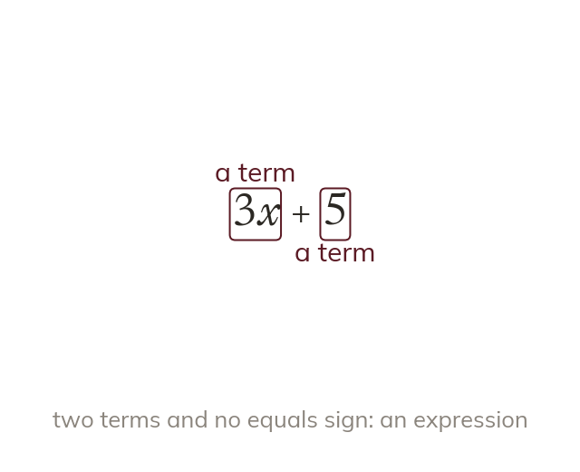

Terms and expressions
A term is a number, a letter, or numbers and letters multiplied together. An expression is one or more terms with no equals sign.
A term is a number, a letter, or numbers and letters multiplied together; terms are separated by + and - signs. An expression is one or more terms with no equals sign: